Reshape–Transpose¶
The Reshape–Transpose block is a parameterized data-reordering module that first performs a CHW-to-HWC transpose on the input data, followed by a reshape operation. The transpose converts the incoming data layout from channel-major ordering to spatial-major ordering.
After the transpose, the reshaped output is formed by grouping data elements according to a predefined alignment value. This alignment determines how many consecutive elements constitute a logical unit in the output stream, ensuring that data is packed in a form expected by downstream processing stages. Such alignment is typically required for structured data representations, for example grouping class probabilities, coordinate values, or similar fields used in object-detection pipelines such as SSD.
All internal dimensions, storage structures, and control behavior are derived exclusively from the parameters AXI_DATA_BYTES and N_SA. The input data alignment is defined such that the AXI_DATA_BYTES are equally divided among the N_SA parallel channels.
Transpose Slice Logic¶
The Transpose Slice Logic requests data from DRAM in a single burst transaction of AXI_DATA_BYTES bytes and divides the received data into N_SA parallel slices.
Each slice has a width of AXI_DATA_BYTES / N_SA bytes and corresponds to one logical channel. Slicing is performed using a static byte-range mapping, where slice i maps to the byte range:
i × (AXI_DATA_BYTES / N_SA) through (i + 1) × (AXI_DATA_BYTES / N_SA) − 1
Each slice contains AXI_DATA_BYTES / N_SA logical elements. After slicing, the logic reorganizes the data such that elements with the same element index across all slices are grouped together.
This produces AXI_DATA_BYTES / N_SA transposed groups, where each group contains one element from every slice. This operation implements the CHW-to-HWC transpose across the slice dimension.
BRAM Organization¶
The BRAM subsystem is a banked on-chip memory structure used to store transposed data prior to reshape. The entire subsystem is fully parameterized by AXI_DATA_BYTES and N_SA.
The subsystem organization is derived as follows:
Number of BRAM banks =
AXI_DATA_BYTES / N_SAEach bank corresponds to one element index generated by the transpose
Each bank contains
N_SABRAM instancesEach BRAM instance stores data for exactly one slice index
Each BRAM therefore stores data belonging to one slice and one element index. This one-to-one mapping avoids the need for data reordering, crossbars, or multiplexers during BRAM access.
BRAM Write Controller¶
The BRAM Write Controller accepts transposed data groups from the slice logic and writes them into the BRAM subsystem.
For each burst transaction:
All BRAM banks are active simultaneously
All
N_SABRAM instances in every bank are written in parallelEach BRAM receives one byte corresponding to its slice index and bank element index
This write pattern ensures that all slice and element combinations for a burst are stored coherently in a single operation.
BRAM Read Controller¶
The BRAM Read Controller performs the reshape operation by controlling the read order across the BRAM subsystem.
Reads are issued sequentially across the N_SA BRAM instances within a bank. All BRAMs in the current bank are fully read before advancing to the next bank.
This read sequence converts the transposed, slice-parallel storage format into a linear output stream reshaped according to the predefined alignment.
FIFO Write Logic¶
The FIFO Write Logic receives reshaped data from the BRAM Read Controller and stages it for output write-back.
FIFO instantiation count is derived from
AXI_DATA_BYTES, while FIFO depth is independently configuredOne byte is written into the FIFO per operation, following the exact order produced by the BRAM read sequence
This module aligns the outgoing write data to the DRAM interface bandwidth defined by
AXI_DATA_BYTESWhen the reshaped output data does not naturally align to a full
AXI_DATA_BYTESwrite, the remaining bytes are padded with zeros to complete the transaction
This behavior guarantees that all write-back transactions conform to the DRAM bandwidth requirements while preserving logical data ordering.
Block Diagram¶
